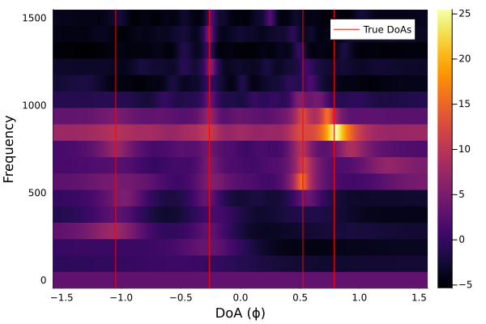
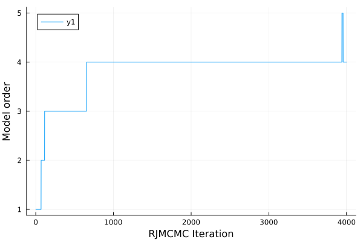
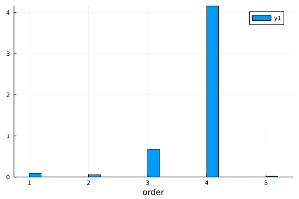
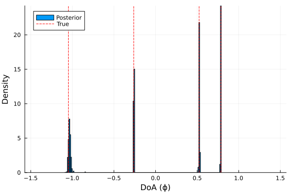
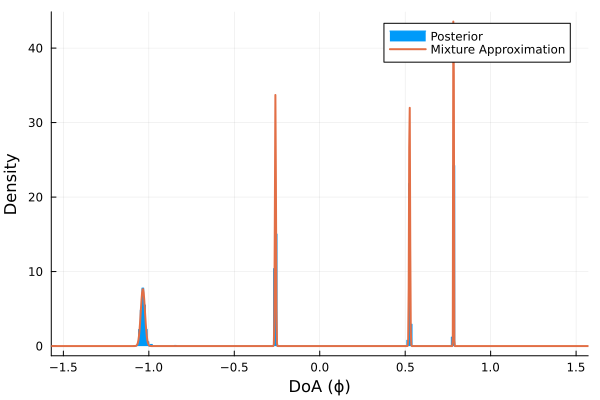
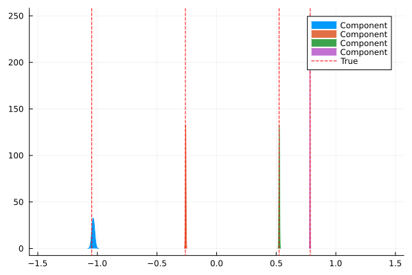
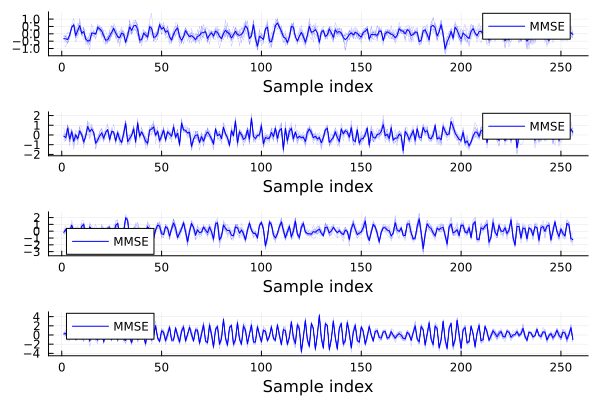
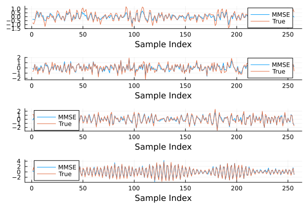

Demonstration
System Setup
We demonstrate the use of the package.
First, let's setup the array geometry. We will consider a system with a uniform linear array (ULA) with M = 20 sensors and a spacing of 0.5 m, a sampling frequency of fs = 3000Hz, where the medium has a propagation speed of c = 1500 m/s:
M = 20
Δx = range(0, M*0.5; length=M)
c = 1500.
fs = 3000.
nothingFor the target sources, we will generate k = 4 targets, with varying bandwidths and varying SNRs:
k = 4
ϕ = [ -60, -15, 30, 45]/180*π # True direction-of-arrivals
f_begin = [ 10, 100, 50, 800] # Source signal starting frequency
f_end = [1000, 1500, 500, 900] # Source signal ending frequency
snr = [ -6, -4, 0, 4] # Varying SNRs in dB
nothingFor simulating the signals, let's use a utility function we used for the experiments. The length of the simulated signal will be N = 256. This corresponds to using S = 8 snapshots in the paper.
using Random, Random123
seed = (0x97dcb950eaebcfba, 0x741d36b68bef6415)
rng = Random123.Philox4x(UInt64, seed, 8)
Random123.set_counter!(rng, 1)
N = 256
include("../../scripts/common.jl")
y, x = simulate_signal(
rng, N, N*8, ϕ, snr, f_begin, f_end, fs, 1.0, Δx, c; visualize=false
)
y256×20 Matrix{Float64}:
0.360709 0.640837 -1.08523 … 0.721804 0.548166 -0.193522
0.325499 -1.31238 -5.36896 -0.179135 3.94161 2.70447
-2.11102 -1.10027 2.70213 1.98842 1.65567 0.0962336
-0.0892674 2.51111 2.06328 0.847632 -2.48833 -0.822481
4.2354 2.62225 -0.108678 2.18234 0.346064 2.19069
2.50223 -0.991697 -0.840659 … -0.958213 1.13261 1.5098
0.794896 -1.11494 0.661329 2.04444 -0.163583 -0.860915
0.564756 0.304567 1.0036 0.155194 -1.31425 0.724295
0.748223 -0.285768 -0.888031 -0.295756 1.51641 0.392953
-2.34964 0.138766 2.0194 1.23446 0.150273 -1.14049
⋮ ⋱
0.748478 -0.777785 -1.97498 -1.18074 2.87091 1.61903
-2.38294 -4.5027 -0.643079 1.69977 -0.153889 -0.428339
-3.22042 -0.73295 2.29024 -1.67709 -1.66628 -2.79989
0.107743 2.81558 1.7125 … -4.47592 -2.63891 0.902535
0.732986 0.640845 -1.37644 -1.36551 -2.35671 -2.71515
0.172369 0.0882863 -0.372769 -0.829181 -4.52682 -1.71812
0.289956 -0.968134 -2.98629 -5.36361 -3.42141 -1.08947
0.593019 -1.73825 -3.045 0.725523 2.77738 2.23934
-3.07976 -0.468143 1.48932 … 4.61356 2.25859 0.225338We can visualize the simulated signal through beamforming. Consider the Capon spectral estimator, more commonly known as minimum-variance distortionless response, or MVDR for short :
using Tullio
using Plots
include("../../scripts/baselines/common.jl")
include("../../scripts/baselines/subbandbeamform.jl")
N_fft = 32
N_snap = N ÷ N_fft
R, _, f_range = snapshot_covariance(y, N_fft, fs, N_snap) # Short-time Fourier transform
config = ArrayConfig(c, Δx)
n_grid = 2^10
ϕ_range = range(-π/2, π/2; length=n_grid)
P = subbandmvdr(R, ϕ_range, f_range, config)
Plots.heatmap(ϕ_range, f_range, 10*log10.(P'), xlabel="DoA (ϕ)", ylabel="Frequency")
Plots.vline!(ϕ, label="True DoAs", linecolor=:red)
savefig("angle_frequency_spectrum_plot.svg")
nothingThis yields the angle-frequency spectrum: 
We can see that the signals were correctly simulated as we specified.
Creating the Bayesian Model
Now, let's construct the Bayesian model. We will use a non-informative inverse-gamma prior on the source SNRs ($\gamma$ in the paper), a truncated negative-binomial prior on the model order ($k$), a Jeffrey's scale prior on the signal power ($\sigma^2$) as stated in the paper:
alpha, beta = 0, 0
source_prior = InverseGamma(0.01, 0.01)
order_prior = truncated(NegativeBinomial(1/2 + 0.1, 0.1/(0.1 + 1)), 0, M-1)
model = WidebandDoA.WidebandIsoIsoModel(
N, Δx, c, fs, source_prior, alpha, beta; order_prior
)
nothingThe model can be conditioned on the data as follows:
cond = WidebandConditioned(model, y)
nothingWe are now ready to infer the posterior for this model.
Inference with RJMCMC
For inference, we will use the ReversibleJump package, which is the inference counterpart of this package.
We use independent jump proposals with the uniform-log-normal auxiliary proposal distributions ($q(\gamma)$, $q(\gamma)$ in the paper) as done in the paper:
using ReversibleJump
prop = UniformNormalLocalProposal(0.0, 2.0)
jump = IndepJumpProposal(prop)
nothingFor the update move, we will use slice sampling[N2003] with the stepping-out procedure:
mcmc = SliceSteppingOut([2.0, 2.0])
nothingThe RJMCMC algorithm we use is the non-reversible jump algorithm by Gagnon and Doucet[GD2020].
rjmcmc = ReversibleJump.NonReversibleJumpMCMC(jump, mcmc; jump_rate=0.9)
nothingNow let's simulate some Markov chains!
n_samples = 4_000
initial_params = WidebandDoA.WidebandIsoIsoParam{Float64}[]
initial_order = 0
samples, stats = ReversibleJump.sample(
rng,
rjmcmc,
cond,
n_samples,
initial_order,
initial_params;
show_progress=false,
)
samples4000-element Vector{Vector{WidebandIsoIsoParam{Float64}}}:
[WidebandIsoIsoParam{Float64}(0.8087467725851902, 1.511385091418317)]
[WidebandIsoIsoParam{Float64}(0.8087467725851902, 1.511385091418317)]
[WidebandIsoIsoParam{Float64}(0.8087467725851902, 1.511385091418317)]
[WidebandIsoIsoParam{Float64}(0.8087467725851902, 1.511385091418317)]
[WidebandIsoIsoParam{Float64}(0.8027468875356609, -1.2599624630851576)]
[WidebandIsoIsoParam{Float64}(0.8027468875356609, -1.2599624630851576)]
[WidebandIsoIsoParam{Float64}(0.8027468875356609, -1.2599624630851576)]
[WidebandIsoIsoParam{Float64}(0.8027468875356609, -1.2599624630851576)]
[WidebandIsoIsoParam{Float64}(0.8027468875356609, -1.2599624630851576)]
[WidebandIsoIsoParam{Float64}(0.8027468875356609, -1.2599624630851576)]
⋮
[WidebandIsoIsoParam{Float64}(0.4628428022814184, -1.4991024747225004), WidebandIsoIsoParam{Float64}(-0.26235841013393285, -1.9928433539619201), WidebandIsoIsoParam{Float64}(-1.0207693571454957, -2.7113282442345197), WidebandIsoIsoParam{Float64}(0.78397856856802, -0.11184616341893294)]
[WidebandIsoIsoParam{Float64}(0.4628428022814184, -1.4991024747225004), WidebandIsoIsoParam{Float64}(-0.26235841013393285, -1.9928433539619201), WidebandIsoIsoParam{Float64}(-1.0207693571454957, -2.7113282442345197), WidebandIsoIsoParam{Float64}(0.78397856856802, -0.11184616341893294)]
[WidebandIsoIsoParam{Float64}(0.4628428022814184, -1.4991024747225004), WidebandIsoIsoParam{Float64}(-0.26235841013393285, -1.9928433539619201), WidebandIsoIsoParam{Float64}(-1.0207693571454957, -2.7113282442345197), WidebandIsoIsoParam{Float64}(0.78397856856802, -0.11184616341893294)]
[WidebandIsoIsoParam{Float64}(0.4628428022814184, -1.4991024747225004), WidebandIsoIsoParam{Float64}(-0.26235841013393285, -1.9928433539619201), WidebandIsoIsoParam{Float64}(-1.0207693571454957, -2.7113282442345197), WidebandIsoIsoParam{Float64}(0.78397856856802, -0.11184616341893294)]
[WidebandIsoIsoParam{Float64}(0.4628428022814184, -1.4991024747225004), WidebandIsoIsoParam{Float64}(-0.26235841013393285, -1.9928433539619201), WidebandIsoIsoParam{Float64}(-1.0207693571454957, -2.7113282442345197), WidebandIsoIsoParam{Float64}(0.78397856856802, -0.11184616341893294)]
[WidebandIsoIsoParam{Float64}(0.4628428022814184, -1.4991024747225004), WidebandIsoIsoParam{Float64}(-0.26235841013393285, -1.9928433539619201), WidebandIsoIsoParam{Float64}(-1.0207693571454957, -2.7113282442345197), WidebandIsoIsoParam{Float64}(0.78397856856802, -0.11184616341893294)]
[WidebandIsoIsoParam{Float64}(0.5045616356726782, -1.5332852207293157), WidebandIsoIsoParam{Float64}(-0.25577404025280515, -1.8798772691969639), WidebandIsoIsoParam{Float64}(-1.0681464687840236, -2.5306605977296606), WidebandIsoIsoParam{Float64}(0.7841980703388375, -0.18049349961898162)]
[WidebandIsoIsoParam{Float64}(0.4654054725433833, -1.5204795610693413), WidebandIsoIsoParam{Float64}(-0.2614455731047566, -2.084224291871939), WidebandIsoIsoParam{Float64}(-1.0554567267010557, -2.6319800093054453), WidebandIsoIsoParam{Float64}(0.7852242062811665, 0.03342229888032422)]
[WidebandIsoIsoParam{Float64}(0.4654054725433833, -1.5204795610693413), WidebandIsoIsoParam{Float64}(-0.2614455731047566, -2.084224291871939), WidebandIsoIsoParam{Float64}(-1.0554567267010557, -2.6319800093054453), WidebandIsoIsoParam{Float64}(0.7852242062811665, 0.03342229888032422)]Signal Detection
Detection can be performed by analyzing the posterior of the model order ($k$).
Here is the trace of the model order:
Plots.plot([stat.order for stat in stats], xlabel="RJMCMC Iteration", ylabel="Model order")
savefig("model_order_trace.svg")
nothing
And the histogram:
Plots.histogram([stat.order for stat in stats], xlabel="order", normed=true)
savefig("model_order_hist.svg")
nothing
From the posterior, we can obtain point estimates of the model order $k$. In the paper, we use the median.
DoA Estimation
Now, let's estimate the DoAs.
For this, we will discard the first 10% of the samples and only use the remaining samples.
burned = samples[n_samples ÷ 10:end]3601-element Vector{Vector{WidebandIsoIsoParam{Float64}}}:
[WidebandIsoIsoParam{Float64}(0.48617177447331666, -1.5833600267465202), WidebandIsoIsoParam{Float64}(-0.25787908519494107, -1.9138649963297323), WidebandIsoIsoParam{Float64}(-1.0494494928117655, -2.5449520641521524), WidebandIsoIsoParam{Float64}(0.7842655141756206, -0.2514833934448311)]
[WidebandIsoIsoParam{Float64}(0.48617177447331666, -1.5833600267465202), WidebandIsoIsoParam{Float64}(-0.25787908519494107, -1.9138649963297323), WidebandIsoIsoParam{Float64}(-1.0494494928117655, -2.5449520641521524), WidebandIsoIsoParam{Float64}(0.7842655141756206, -0.2514833934448311)]
[WidebandIsoIsoParam{Float64}(0.48617177447331666, -1.5833600267465202), WidebandIsoIsoParam{Float64}(-0.25787908519494107, -1.9138649963297323), WidebandIsoIsoParam{Float64}(-1.0494494928117655, -2.5449520641521524), WidebandIsoIsoParam{Float64}(0.7842655141756206, -0.2514833934448311)]
[WidebandIsoIsoParam{Float64}(0.48617177447331666, -1.5833600267465202), WidebandIsoIsoParam{Float64}(-0.25787908519494107, -1.9138649963297323), WidebandIsoIsoParam{Float64}(-1.0494494928117655, -2.5449520641521524), WidebandIsoIsoParam{Float64}(0.7842655141756206, -0.2514833934448311)]
[WidebandIsoIsoParam{Float64}(0.46455399808415143, -1.4290029531833937), WidebandIsoIsoParam{Float64}(-0.2614855899921556, -2.0138466546608162), WidebandIsoIsoParam{Float64}(-1.0472327954863878, -2.6423759837046803), WidebandIsoIsoParam{Float64}(0.7850532315513831, -0.15869843328151162)]
[WidebandIsoIsoParam{Float64}(0.46455399808415143, -1.4290029531833937), WidebandIsoIsoParam{Float64}(-0.2614855899921556, -2.0138466546608162), WidebandIsoIsoParam{Float64}(-1.0472327954863878, -2.6423759837046803), WidebandIsoIsoParam{Float64}(0.7850532315513831, -0.15869843328151162)]
[WidebandIsoIsoParam{Float64}(0.46455399808415143, -1.4290029531833937), WidebandIsoIsoParam{Float64}(-0.2614855899921556, -2.0138466546608162), WidebandIsoIsoParam{Float64}(-1.0472327954863878, -2.6423759837046803), WidebandIsoIsoParam{Float64}(0.7850532315513831, -0.15869843328151162)]
[WidebandIsoIsoParam{Float64}(0.46455399808415143, -1.4290029531833937), WidebandIsoIsoParam{Float64}(-0.2614855899921556, -2.0138466546608162), WidebandIsoIsoParam{Float64}(-1.0472327954863878, -2.6423759837046803), WidebandIsoIsoParam{Float64}(0.7850532315513831, -0.15869843328151162)]
[WidebandIsoIsoParam{Float64}(0.46455399808415143, -1.4290029531833937), WidebandIsoIsoParam{Float64}(-0.2614855899921556, -2.0138466546608162), WidebandIsoIsoParam{Float64}(-1.0472327954863878, -2.6423759837046803), WidebandIsoIsoParam{Float64}(0.7850532315513831, -0.15869843328151162)]
[WidebandIsoIsoParam{Float64}(0.46455399808415143, -1.4290029531833937), WidebandIsoIsoParam{Float64}(-0.2614855899921556, -2.0138466546608162), WidebandIsoIsoParam{Float64}(-1.0472327954863878, -2.6423759837046803), WidebandIsoIsoParam{Float64}(0.7850532315513831, -0.15869843328151162)]
⋮
[WidebandIsoIsoParam{Float64}(0.4628428022814184, -1.4991024747225004), WidebandIsoIsoParam{Float64}(-0.26235841013393285, -1.9928433539619201), WidebandIsoIsoParam{Float64}(-1.0207693571454957, -2.7113282442345197), WidebandIsoIsoParam{Float64}(0.78397856856802, -0.11184616341893294)]
[WidebandIsoIsoParam{Float64}(0.4628428022814184, -1.4991024747225004), WidebandIsoIsoParam{Float64}(-0.26235841013393285, -1.9928433539619201), WidebandIsoIsoParam{Float64}(-1.0207693571454957, -2.7113282442345197), WidebandIsoIsoParam{Float64}(0.78397856856802, -0.11184616341893294)]
[WidebandIsoIsoParam{Float64}(0.4628428022814184, -1.4991024747225004), WidebandIsoIsoParam{Float64}(-0.26235841013393285, -1.9928433539619201), WidebandIsoIsoParam{Float64}(-1.0207693571454957, -2.7113282442345197), WidebandIsoIsoParam{Float64}(0.78397856856802, -0.11184616341893294)]
[WidebandIsoIsoParam{Float64}(0.4628428022814184, -1.4991024747225004), WidebandIsoIsoParam{Float64}(-0.26235841013393285, -1.9928433539619201), WidebandIsoIsoParam{Float64}(-1.0207693571454957, -2.7113282442345197), WidebandIsoIsoParam{Float64}(0.78397856856802, -0.11184616341893294)]
[WidebandIsoIsoParam{Float64}(0.4628428022814184, -1.4991024747225004), WidebandIsoIsoParam{Float64}(-0.26235841013393285, -1.9928433539619201), WidebandIsoIsoParam{Float64}(-1.0207693571454957, -2.7113282442345197), WidebandIsoIsoParam{Float64}(0.78397856856802, -0.11184616341893294)]
[WidebandIsoIsoParam{Float64}(0.4628428022814184, -1.4991024747225004), WidebandIsoIsoParam{Float64}(-0.26235841013393285, -1.9928433539619201), WidebandIsoIsoParam{Float64}(-1.0207693571454957, -2.7113282442345197), WidebandIsoIsoParam{Float64}(0.78397856856802, -0.11184616341893294)]
[WidebandIsoIsoParam{Float64}(0.5045616356726782, -1.5332852207293157), WidebandIsoIsoParam{Float64}(-0.25577404025280515, -1.8798772691969639), WidebandIsoIsoParam{Float64}(-1.0681464687840236, -2.5306605977296606), WidebandIsoIsoParam{Float64}(0.7841980703388375, -0.18049349961898162)]
[WidebandIsoIsoParam{Float64}(0.4654054725433833, -1.5204795610693413), WidebandIsoIsoParam{Float64}(-0.2614455731047566, -2.084224291871939), WidebandIsoIsoParam{Float64}(-1.0554567267010557, -2.6319800093054453), WidebandIsoIsoParam{Float64}(0.7852242062811665, 0.03342229888032422)]
[WidebandIsoIsoParam{Float64}(0.4654054725433833, -1.5204795610693413), WidebandIsoIsoParam{Float64}(-0.2614455731047566, -2.084224291871939), WidebandIsoIsoParam{Float64}(-1.0554567267010557, -2.6319800093054453), WidebandIsoIsoParam{Float64}(0.7852242062811665, 0.03342229888032422)]Bayesian model averaging (BMA) correponds to flattening all the local variables:
flat = vcat(burned...)14408-element Vector{WidebandIsoIsoParam{Float64}}:
WidebandIsoIsoParam{Float64}(0.48617177447331666, -1.5833600267465202)
WidebandIsoIsoParam{Float64}(-0.25787908519494107, -1.9138649963297323)
WidebandIsoIsoParam{Float64}(-1.0494494928117655, -2.5449520641521524)
WidebandIsoIsoParam{Float64}(0.7842655141756206, -0.2514833934448311)
WidebandIsoIsoParam{Float64}(0.48617177447331666, -1.5833600267465202)
WidebandIsoIsoParam{Float64}(-0.25787908519494107, -1.9138649963297323)
WidebandIsoIsoParam{Float64}(-1.0494494928117655, -2.5449520641521524)
WidebandIsoIsoParam{Float64}(0.7842655141756206, -0.2514833934448311)
WidebandIsoIsoParam{Float64}(0.48617177447331666, -1.5833600267465202)
WidebandIsoIsoParam{Float64}(-0.25787908519494107, -1.9138649963297323)
⋮
WidebandIsoIsoParam{Float64}(0.7841980703388375, -0.18049349961898162)
WidebandIsoIsoParam{Float64}(0.4654054725433833, -1.5204795610693413)
WidebandIsoIsoParam{Float64}(-0.2614455731047566, -2.084224291871939)
WidebandIsoIsoParam{Float64}(-1.0554567267010557, -2.6319800093054453)
WidebandIsoIsoParam{Float64}(0.7852242062811665, 0.03342229888032422)
WidebandIsoIsoParam{Float64}(0.4654054725433833, -1.5204795610693413)
WidebandIsoIsoParam{Float64}(-0.2614455731047566, -2.084224291871939)
WidebandIsoIsoParam{Float64}(-1.0554567267010557, -2.6319800093054453)
WidebandIsoIsoParam{Float64}(0.7852242062811665, 0.03342229888032422)On the other hand, Bayesian model selection corresponds to selecting the samples that have a specific model order.
Here is the marginal posterior of the DoAs:
Plots.histogram([θ.phi for θ in flat], normed=true, bins=128, xlims=[-π/2, π/2], xlabel="DoA (ϕ)", label="Posterior", ylabel="Density")
Plots.vline!(ϕ, label="True", color=:red, linestyle=:dash)
savefig("doa_hist.svg")
nothing
Unfortunately, this does not yield the DoA posterior corresponding to each source. For this, we turn to the relabeling algorithm by Roodaki et al.[RBF2014]. This algorithm fits a Gaussian mixture model on the histogram above. It also generates labels for each local variable, so that we can label variable other than just the DoAs. For this though, we have to choose the number of mixture components. Roodaki et al. recommend the 80% or 90% upper percentile of the posterior:
k_mixture = quantile([stat.order for stat in stats], 0.9) |> Base.Fix1(round, Int)
ϕ_post = [[target.phi for target in sample] for sample in burned]
mixture, labels = WidebandDoA.relabel(
rng, ϕ_post, k_mixture; show_progress=false
)
mixtureMixtureModel{Distributions.Normal{Float64}}(K = 4)
components[1] (prior = 0.2500): Distributions.Normal{Float64}(μ=-1.0358339503227763, σ=0.01052253097523397)
components[2] (prior = 0.2500): Distributions.Normal{Float64}(μ=-0.25931553190627205, σ=0.002407002407453057)
components[3] (prior = 0.2500): Distributions.Normal{Float64}(μ=0.4804694292662543, σ=0.009689984608621747)
components[4] (prior = 0.2500): Distributions.Normal{Float64}(μ=0.7831703498368725, σ=0.0016590982538006072)
Let's check that the Gaussian mixture approximation is accurate. This can be done by comparing the marginal density of the mixture against the histogram:
using StatsPlots
Plots.stephist([θ.phi for θ in flat], normed=true, bins=128, xlims=[-π/2, π/2], xlabel="DoA (ϕ)", ylabel="Density", label="Posterior", fill=true)
Plots.plot!(range(-π/2,π/2; length=1024), Base.Fix1(pdf, mixture), label="Mixture Approximation", linewidth=2)
savefig("doa_relabel_density.svg")
nothing
The DoA posterior of each source is then represented by each component of the mixture:
Plots.plot(mixture, label="Component", fill=true)
Plots.vline!(ϕ, label="True", color=:red, linestyle=:dash)
savefig("doa_relabel_comp.svg")
nothing
Reconstruction
Finally, we will demonstrate reconstruction. Unfortunately, the API for reconstruction is a little less ironed-out, but it is functional.
For this, we have to use the labels generated by the relabeling procedure. Here, for each RJMCMC sample, we will sample from the conditional posterior conditional and then relabel the signal segments to their corresponding source. We also thin the samples by a factor n_thin = 100 to speed up things and reduce memory consumption.
x_samples = [Vector{Float64}[] for j in 1:k_mixture]
x_means = [Vector{Float64}[] for j in 1:k_mixture]
n_thin = n_samples ÷ 10
samples_thinned = burned[1:n_thin:end]
labels_thinned = labels[1:n_thin:end]
for (sample, labs) in zip(samples_thinned, labels_thinned)
dist_x = WidebandDoA.reconstruct(cond, sample)
x_sample = rand(rng, dist_x) # Conditional posterior sample
x_mean = mean(dist_x) # Conditional posterior mean
kj = length(sample)
total_len = length(x_sample)
blocksize = total_len ÷ kj
# Labeling the conditional posterior mean and sample
for (idx, label) in enumerate(labs)
if label > k_mixture
# A label of k_mixture + 1 corresponds to the clutter
continue
end
# The source signals are flattened so we have to slice the block corresponding
# to the source the label is pointing to.
blockrange = (idx-1)*blocksize+1:idx*blocksize
xj_sample = x_sample[blockrange[1:N]]
xj_mean = x_mean[ blockrange[1:N]]
push!(x_samples[label], xj_sample)
push!(x_means[label], xj_mean)
end
end
nothingNow that sampling and relabeling is done, we can visualize the posterior samples against with the minimum mean-squared error (MMSE) estimates (posterior mean). The variability of the posterior samples represent the posterior uncertainty:
x_mmse = mean.(x_samples)
plts = map(1:k_mixture) do j
p = Plots.plot(x_mmse[j], linecolor=:blue, label="MMSE", xlabel="Sample index")
for x_sample in x_samples[j]
Plots.plot!(p, x_sample, linecolor=:blue, alpha=0.5, linewidth=0.2, label=nothing)
end
p
end
Plots.plot(plts..., layout = (4, 1))
savefig("recon_samples.svg")
nothing
Finally, let's compare the MMSE against the ground truth x.
Plots.plot( x_mmse, layout=(4,1), label="MMSE", xlabel="Sample Index")
Plots.plot!(x, layout=(4,1), label="True", xlabel="Sample Index")
savefig("recon_mmse_comparison.svg")
nothing
- N2003Neal, Radford M. "Slice sampling." The annals of statistics 31.3 (2003): 705-767.
- GD2020Gagnon, Philippe, and Arnaud Doucet. "Nonreversible jump algorithms for Bayesian nested model selection." Journal of Computational and Graphical Statistics 30.2 (2020): 312-323.
- RBF2014Roodaki, Alireza, Julien Bect, and Gilles Fleury. "Relabeling and summarizing posterior distributions in signal decomposition problems when the number of components is unknown." IEEE Transactions on Signal Processing (2014).